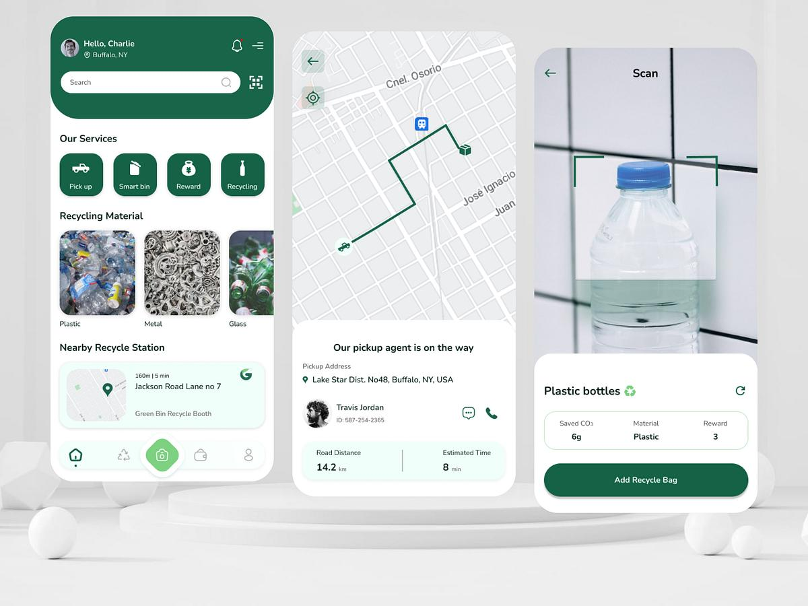
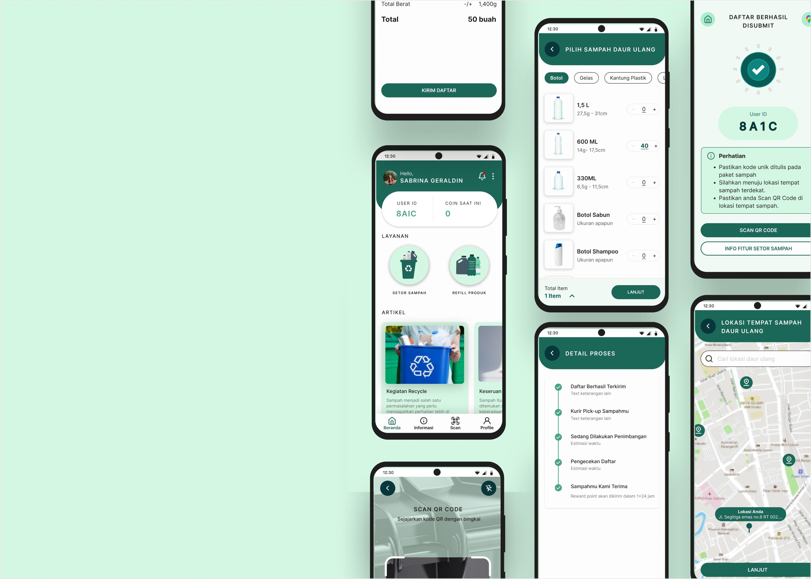

Instalação e protótipos do aplicativo
Esta página apresenta os protótipos de interface pensados para o dia a dia dos catadores e cooperativas.
Importante: o EcoColeta ainda é uma proposta acadêmica/demonstrativa.
Não há backend, GPS real, autenticação ou sincronização entre dispositivos nesta versão.
Escopo do protótipo para catadores
O protótipo prioriza telas simples, legíveis no celular e úteis na rotina de coleta:
Para o catador
- Ver solicitações próximas
- Organizar a rota do dia
- Registrar materiais e pesos
- Acompanhar histórico e ganhos estimados
Para a cooperativa
- Visão geral das coletas
- Distribuição de demandas
- Registro consolidado de materiais
- Relatórios simples de produtividade
Protótipos de telas do aplicativo
Representações de baixa/média fidelidade das principais telas para catadores:
Catador
Painel do dia
Resumo rápido antes de sair para a coleta.
5solicitações
12 kmrota
48 kgmeta
📍 Condomínio Solar — papel/plástico
📍 Mercado Central — papelão
📍 Escola Municipal — pet
Iniciar rota
Tela inicial do catador
Coleta
Mapa e rota
Ordem sugerida dos pontos do dia.
1. Rua das Flores, 120
2. Av. Brasil, 890
3. Rua Paraná, 45
4. Cooperativa (retorno)
Distância total estimada: 12 km
Tempo estimado: 3h20
Tempo estimado: 3h20
Ver no mapa
Organização de rotas
Registro
Materiais coletados
Lançamento rápido no ponto de coleta.
📄 Papel / papelão — 18 kg
🧴 Plástico PET — 9 kg
🥫 Metal — 4 kg
🍾 Vidro — 6 kg
Total do ponto: 37 kg
Valor estimado: R$ 42,00
Valor estimado: R$ 42,00
Salvar coleta
Registro de materiais
Solicitações
Pedidos disponíveis
Condomínio Parque Verde
Papel e plástico · 2,1 km
Papel e plástico · 2,1 km
Restaurante Bom Prato
Óleo e papelão · 3,4 km
Óleo e papelão · 3,4 km
Loja de Embalagens
Papelão · 1,0 km
Papelão · 1,0 km
Aceitar solicitação
Lista de oportunidades de coleta
Relatórios
Resumo da semana
186 kgcoletados
14atendimentos
Segunda — 32 kg
Terça — 28 kg
Quarta — 41 kg
Quinta — 35 kg
Sexta — 50 kg
Exportar resumo
Histórico e produtividade
4. Imagens de referência do projeto
Imagens já presentes no repositório, úteis para a documentação visual:

Referência 1

Referência 3
5. Módulos previstos no protótipo
- Painel inicial — indicadores, coletas do dia e solicitações pendentes.
- Solicitações — pedidos de coleta, busca e acompanhamento.
- Coletas e rotas — organização de pontos e atualização de status.
- Materiais — registro de papel, plástico, metal, vidro e quantidades.
- Relatórios — histórico, indicadores e exportação simples.
- Comunidade — mural de informações e colaboração.
- Perfil — dados do catador ou da cooperativa.
As telas acima são protótipos de interface para apresentação acadêmica, com dados fictícios.
Funcionalidades reais (login, GPS, banco de dados e sincronização) ainda precisam ser desenvolvidas.
← Voltar à página principal · Ver página de protótipo · Ver requisitos